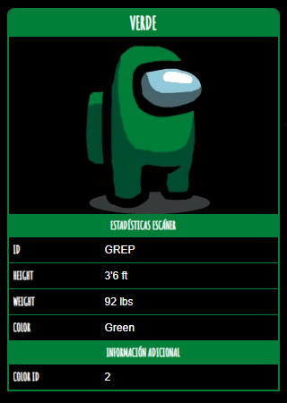

Verde

Verde
(también llamado "Verde Oscuro" por los fans) es uno de los colores de Among Us que los jugadores pueden personalizar.
Junto a Rojo, Verde parece ser una mascota del juego, ya que aparecen en varios carteles y cameos varias veces a lo largo del juego.
Verde también parece ser un conocido cercano de Naranja.
Curiosidades
- Verde era un Impostor en uno de los carteles promocionales de Among Us.
- Verde era uno de los colores originales disponibles.
- Verde aparece en el ícono "Discutir" cuando comienza una Reunión de Emergencia o cuando se reporta un cadáver, junto con Naranja.
- En la cartera que se ve en las tareas Deslizar Tarjeta e Ingresar Código de Identificación, hay una imagen de Verde, Naranja y Cian en una imagen que se parece a una familia.
En Polus, Verde aparece en dos carteles como un Impostor con las palabras "VEA algo DIGA algo", que estaba presente en el juego "Completing the Mission" de "Henry Stickmin Collections".
- En la sección Cómo jugar, Verde se ve como un compañero de equipo, junto con Blanco y Naranja.